ECE 4160 – Fast Robots
The purpose of this lab was to implement position control using feedback from the ToF sensor so that the robot could drive toward a wall and stop at a desired setpoint. In this lab I focused on a PI controller and evaluated its practical performance, including overshoot, settling behavior, and robustness to changing starting conditions. I also implemented linear extrapolation so that the control loop could run faster than the ToF sensor update rate.
Before starting the control portion of the lab, I set up a debugging workflow over Bluetooth. My robot waits for a start command from my computer, runs the controller for a fixed amount of time while storing debugging data in arrays, and then sends the logged data back over BLE after the run completes.
The main values I logged were:
I created BLE commands to start the car, stop the car, change controller gains, and send stored debugging data back to the computer.
case START_CAR:
error_integral = 0;
prev_time_pi = 0;
pid_counter = 0;
car_is_on = true;
distance_sensor_2.startRanging();
tx_estring_value.clear();
tx_estring_value.append("Car Started");
tx_characteristic_string.writeValue(tx_estring_value.c_str());
break;
case STOP_CAR:
car_is_on = false;
distance_sensor_2.stopRanging();
analogWrite(motorL1, 0);
analogWrite(motorL2, 0);
analogWrite(motorR1, 0);
analogWrite(motorR2, 0);
tx_estring_value.clear();
tx_estring_value.append("Car Stopped");
tx_characteristic_string.writeValue(tx_estring_value.c_str());
break;
case SET_PID_GAINS:
float kpfloat, kifloat;
success = robot_cmd.get_next_value(kpfloat);
if (!success)
return;
success = robot_cmd.get_next_value(kifloat);
if (!success)
return;
kp = kpfloat;
ki = kifloat;
break;
case SEND_PID_DATA:
for (int i = 0; i <= pid_counter; i++) {
SERIAL_PORT.println(i);
SERIAL_PORT.println("WORKs");
tx_estring_value.clear();
tx_estring_value.append(i);
tx_estring_value.append(",");
tx_estring_value.append(time_arr_imu[i]);
tx_estring_value.append(",");
tx_estring_value.append(time_arr_imu_real[i]);
tx_estring_value.append(",");
tx_estring_value.append(distance_sensor2_we[i]);
tx_estring_value.append(",");
tx_estring_value.append(distance_sensor2[i]);
tx_estring_value.append(",");
tx_estring_value.append(pwm_data[i]);
tx_estring_value.append(",");
tx_estring_value.append(real_dist_val_counter);
tx_characteristic_string.writeValue(tx_estring_value.c_str());
}
break;
On the Python side, I wrote helper functions to send commands to the robot and store debugging data into arrays for plotting.
pid_index_a = []
time_arr_imu_a = []
time_arr_imu_real_a = []
distance_sensor2_we_a = []
distance_sensor2_a = []
pwm_data_a = []
parts_a = []
real_count = []
def collect_pid_data(sender, byte_array):
line = ble.bytearray_to_string(byte_array).strip()
#print(line) # optional, useful for debugging
parts_a.append(line)
parts = line.split(",")
if len(parts) != 7:
return
i, t_loop, t_real, d_est, d_real, pwm, real = parts
pid_index_a.append(int(i))
time_arr_imu_a.append(float(t_loop))
time_arr_imu_real_a.append(float(t_real))
distance_sensor2_we_a.append(float(d_est))
distance_sensor2_a.append(float(d_real))
pwm_data_a.append(float(pwm))
real_count.append(int(real))
I chose to use a PI controller because it gave a good balance between performance and implementation complexity. A proportional term alone can drive the robot toward the target quickly, but it may still leave a steady-state error and settle slightly away from the desired distance. Adding the integral term helps eliminate this leftover error by continuing to correct the robot when the distance remains consistently above or below the setpoint. This allowed me to reach the target more accurately without making the controller unnecessarily complicated.s
My controller used the error between the measured distance and the target distance:
error = current_dist - desired_dist;
control_signal = kp * error + ki * integral_error;
I then constrained the controller output and mapped it into a motor PWM range that would overcome motor deadband:
pwm_val = constrain((int)control_signal, -150, 150);
if (pwm_val > 0) {
updated_pwm = map(pwm_val, 0, 150, 40, 150);
// drive one direction
} else {
updated_pwm = map(-pwm_val, 0, 150, 40, 150);
// drive opposite direction
}
My main loop then included checking if a new distance reading was available from the ToF sensor (and if not extrapolating) and then passing this value along with the desired distance into my function to compute the pwm value using pi control. Finally the loop does analog write commands to change the speed/direction of the motors. Inside the loop I have the following code:
if (central)
{
while (central.connected())
{
BLE.poll();
write_data();
read_data();
if (car_is_on) {
//distance_sensor_2.startRanging();
int dist = -1;
time_arr_imu[pid_counter] = millis();
if (distance_sensor_2.checkForDataReady()) {
dist = distance_sensor_2.getDistance();
distance_sensor2_we[pid_counter] = dist;
distance_sensor2[real_dist_val_counter] = dist;
time_arr_imu_real[real_dist_val_counter] = millis();
SERIAL_PORT.println(dist);
distance_sensor_2.clearInterrupt();
real_dist_val_counter += 1;
//distance_sensor_2.stopRanging();
}
if (dist == -1) { //extrapolation
if (real_dist_val_counter < 2) {
dist = 200;
distance_sensor2_we[pid_counter] = dist;
} else {
float slope = (distance_sensor2[real_dist_val_counter-1] - distance_sensor2[real_dist_val_counter-2]) / float(time_arr_imu_real[real_dist_val_counter-1] - time_arr_imu_real[real_dist_val_counter-2]);
int time_elapsed = time_arr_imu[pid_counter] - time_arr_imu_real[real_dist_val_counter-1];
distance_sensor2_we[pid_counter] = distance_sensor2[real_dist_val_counter-1] + time_elapsed * slope;
dist = distance_sensor2_we[pid_counter];
}
}
//SERIAL_PORT.println(dist);
SERIAL_PORT.print(dist);
int desired_dist = 305;
int pwm_val = pi_value(dist, desired_dist);
SERIAL_PORT.print(", ");
SERIAL_PORT.println(pwm_val);
pwm_val = constrain(pwm_val, -150, 150);
pwm_data[pid_counter] = pwm_val;
int updated_pwm;
if (abs(pwm_val) == 0) {
analogWrite(motorL1, 0);
analogWrite(motorL2, 0);
analogWrite(motorR1, 0);
analogWrite(motorR2, 0);
//car_is_on = false;
//distance_sensor_2.stopRanging();
} else if (pwm_val > 0) {
updated_pwm = map(pwm_val, 0, 150, 40, 150);
analogWrite(motorL1, 0);
analogWrite(motorR2, 0);
analogWrite(motorL2, updated_pwm*1.2);
analogWrite(motorR1, updated_pwm*1.35*1.2);
} else {
updated_pwm = map(-pwm_val, 0, 150, 40, 150);
analogWrite(motorL1, updated_pwm*1.2);
analogWrite(motorR2, updated_pwm*1.35*1.2);
analogWrite(motorL2, 0);
analogWrite(motorR1, 0);
}
pid_counter += 1;
if (pid_counter >= N) {
car_is_on = false;
distance_sensor_2.stopRanging();
analogWrite(motorL1, 0);
analogWrite(motorL2, 0);
analogWrite(motorR1, 0);
analogWrite(motorR2, 0);
}
}
}
car_is_on = false;
distance_sensor_2.stopRanging();
analogWrite(motorL1, 0);
analogWrite(motorL2, 0);
analogWrite(motorR1, 0);
analogWrite(motorR2, 0);
} else {
BLE.poll();
car_is_on = false;
distance_sensor_2.stopRanging();
analogWrite(motorL1, 0);
analogWrite(motorL2, 0);
analogWrite(motorR1, 0);
analogWrite(motorR2, 0);
}
I measured the update rate of the ToF sensor by incrermenting a counter variable every time the ToF sensor had available data. I then recorded the time stamps of consecutive valid sensor readings. In 8960.0 milliseconds, my ToF sensor recorded 100 values, producing an update rate of 0.011160714285714286 updates per millisecond or about 11.16 updates per second (11.16 Hz)
My control loop ran faster than the ToF sensor update rate because I avoided blocking code and computed the controller every loop iteration. The loop ran 100 times in 970.0 milliseconds, producing an update rate of 0.10309278350515463 updates per millisecond or about 103.09 updates per second (103.09 Hz) As we can see the speed at which the control loop ran was significantly faster than the update rate of the ToF sensor (over 9 times faster). This shows the importance of using other methods such as extrapolation to provide the loop with distances even when it doesn't have a new reading available from the ToF sensor.
This is important because a fast controller can react more quickly to changing error, but the controller can only be as accurate as the sensor data it uses.
The main task in this lab was to drive the robot toward a wall and stop at a target distance of 1 foot (304 mm). I tested the robot from different starting distances and tuned the controller to reduce overshoot while still allowing the robot to approach the wall at a reasonable speed.
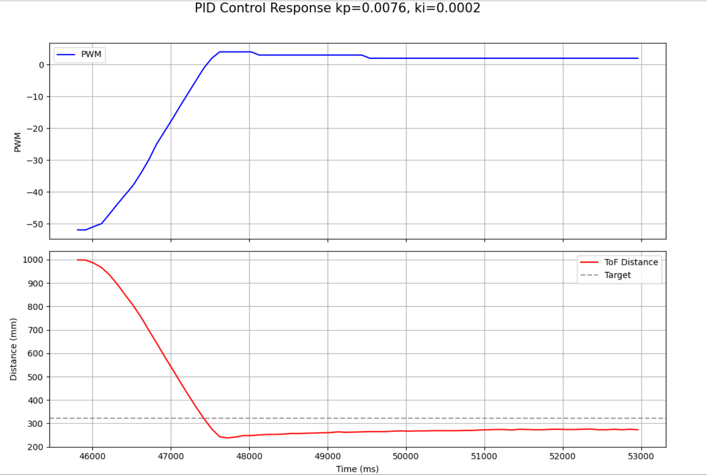
In this run, the robot approaches the wall quickly from an initial distance of about 1000 mm. The control effort is largest at the beginning, which is consistent with the large initial position error, and then decreases as the robot gets closer to the setpoint. The response overshoots the target distance of 322 mm, reaching a minimum of about 240–250 mm before recovering. This suggests the controller is somewhat underdamped. After the overshoot, the robot settles smoothly with only minor oscillation, but it does not converge exactly to the target and instead remains around 270–280 mm, indicating a nonzero steady-state error. Overall, the response is reasonably stable and fast, but additional tuning would be needed to reduce overshoot and improve final accuracy. Later when I implement extrapolation I fine tune these parameters in order to reach more desirable outcomes.
If I push the robot towards or away from the wall, it returns back to the setpoint.
I then approximated the robot's maximum speed by taking the max slope in the distance vs time graph. This resulted in a max speed of 568.6274509803922 mm / s or 0.5686274509803921 m /s.
velocity = (distance[i] - distance[i-1]) / (time[i] - time[i-1]);
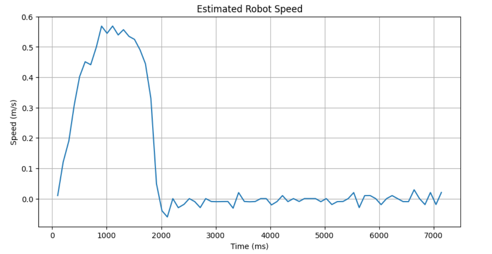
The ToF sensor updates more slowly than the control loop. Initially, I simply reused the last sensor value when no new measurement was available. This allowed the controller to run faster than the sensor, but it did not account for the robot continuing to move between sensor updates.
To improve this, I used the last two valid ToF measurements to estimate the current distance using linear extrapolation. I computed the slope between the last two real sensor readings and then projected forward based on how much time had passed since the most recent reading.
float slope = (dist2 - dist1) / (time2 - time1);
estimated_dist = last_real_dist + slope * time_since_last_real;
This estimate was then used by the controller whenever no new ToF measurement was ready.
Using extrapolation, the effective controller input could be updated at the control loop rate instead of only at the ToF update rate. This gave the controller a better estimate of the robot’s current position and improved performance when approaching the wall quickly.
Comparing the raw and estimated curves:
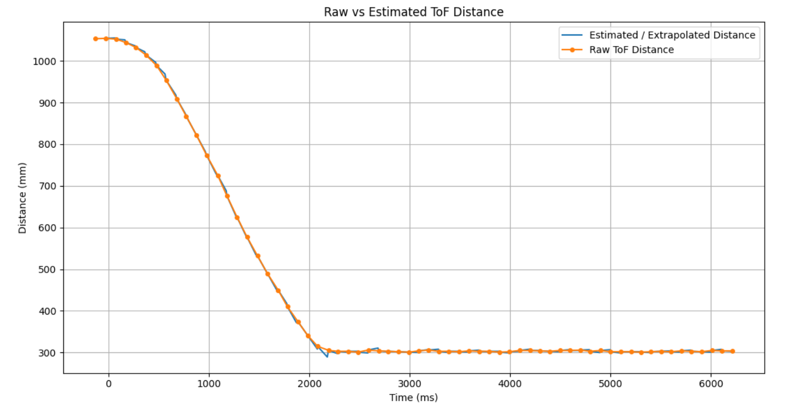
Here we can see that the extrapolation follows a very similar curve to that of the actual distance vs time data, indicating that its is a good predictor.
The ToF sensor measures distance in millimeters, while the motor command is represented as PWM. Because of this, the proportional gain must convert a distance error into a motor command of reasonable size. If the gain is too small, the robot will respond too slowly or not move strongly enough to overcome static friction. If the gain is too large, the robot will overshoot the setpoint and may oscillate or hit the wall. To find good numbers for kp and ki for my PI control, I experiemented with numerous different configurations and analized their graphs (plotting time vs distance and time vs pwm value). Higher values of kp and ki allowed the robot to arrive at its destination quicker, however it tended to overshoot slightly and would oscilate more to find the correct position. On the other hand low values allowed the robot to smoothly arrive to its desired setpoint, however it would do so in a longer amount of time. The numbers I use for future labs will depend on what I value more for that task. If I am fine with overshooting and want my robots to run at a faster speed then I will most likely choose higher values. On the other hand if the tasks require my robots movements to be very precise or if the setpoint is very close to an object and I want to ensure I don't collide with it, I will most likely go with the smaller values. In these experiements I use variance starting distances, showing the robustness of my PI controller to arrive at the desired setpoint regardless of the initial distance. *Note: the first two graphs were developed from me driving the car on my carpet in my apartement, the remaining were developed from me driving the car on the lab floors.
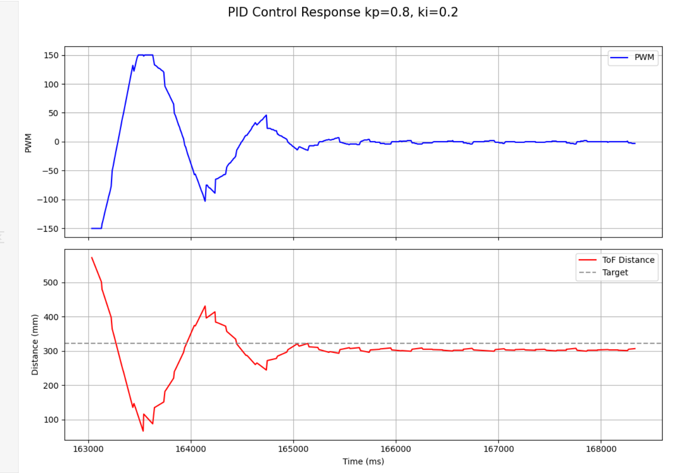
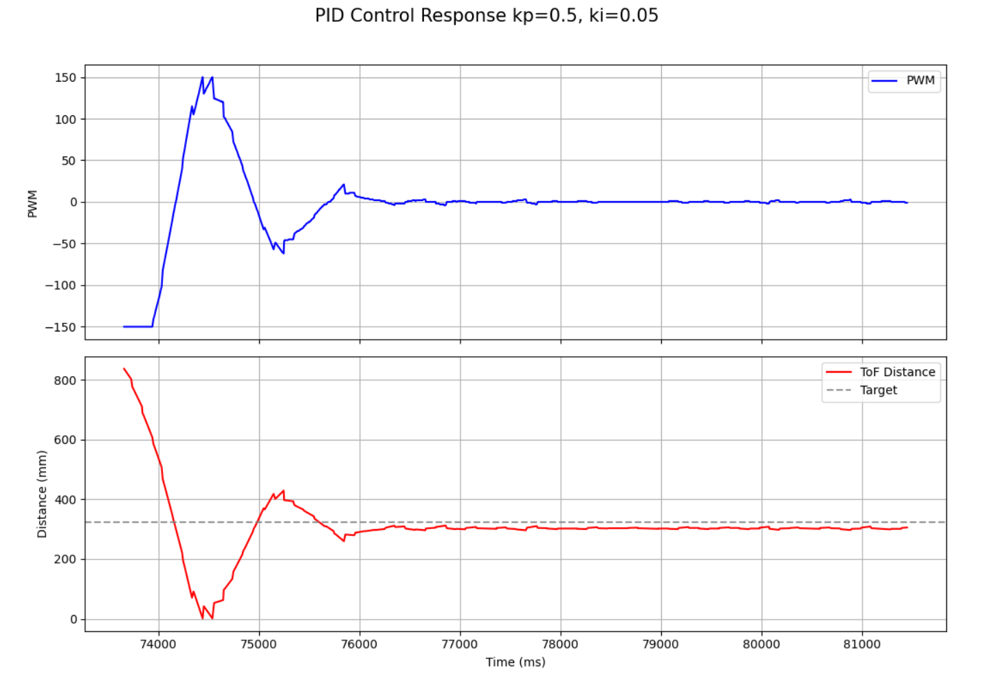
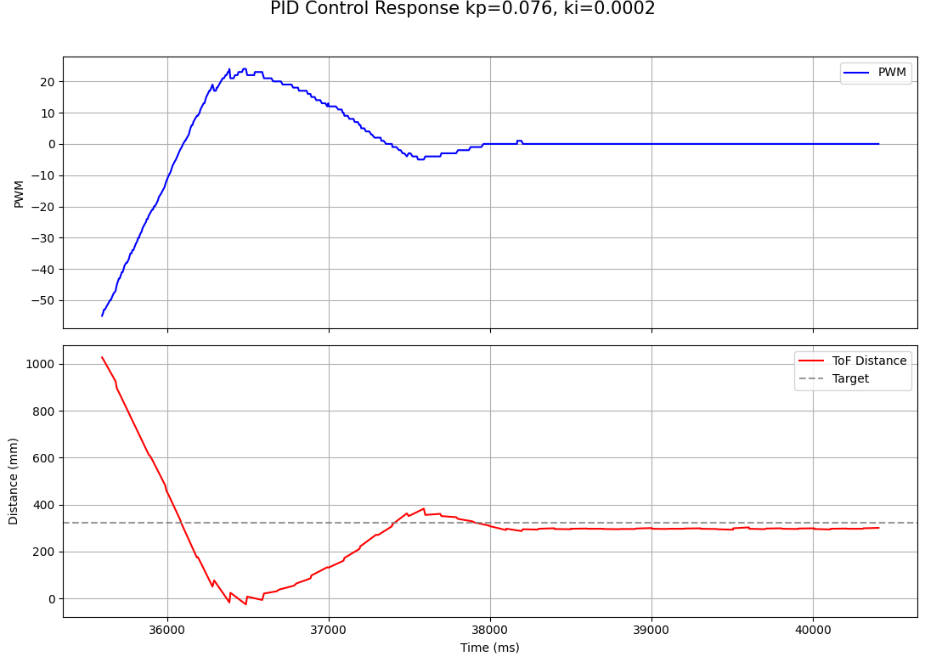
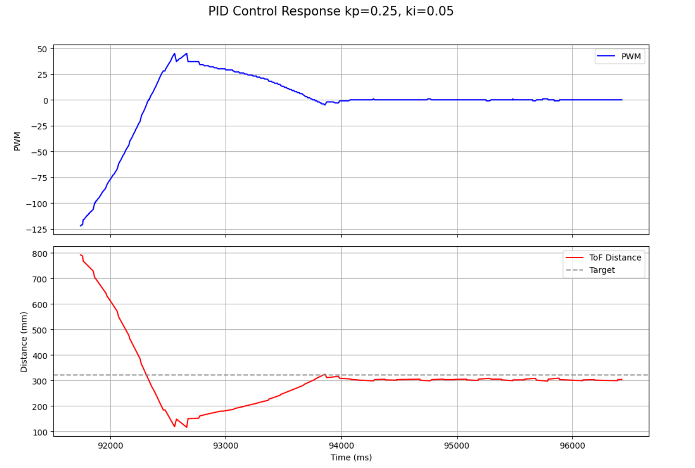
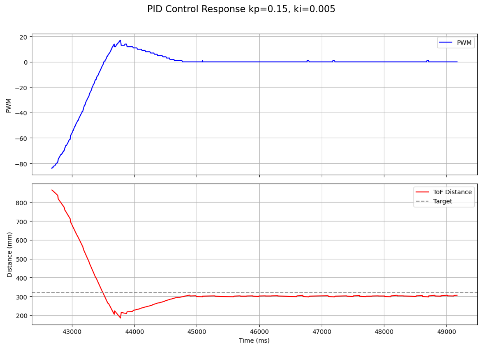
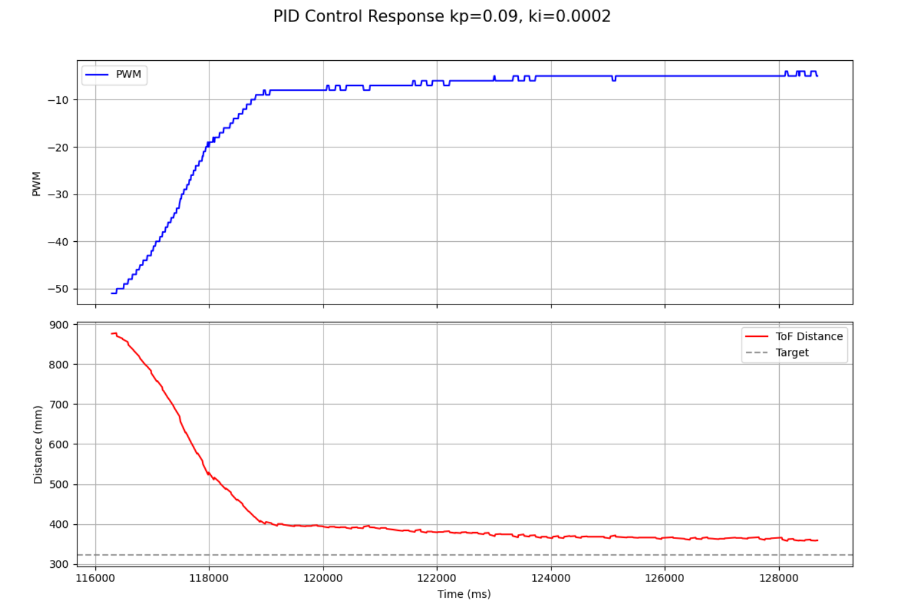
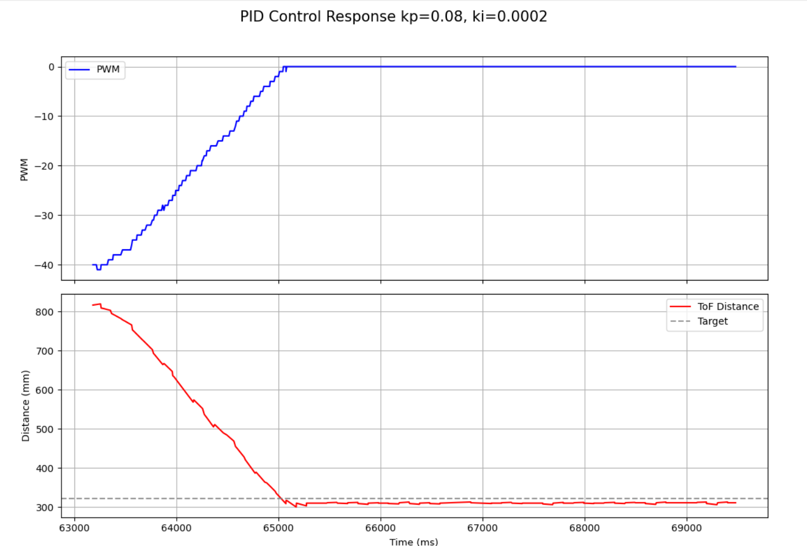
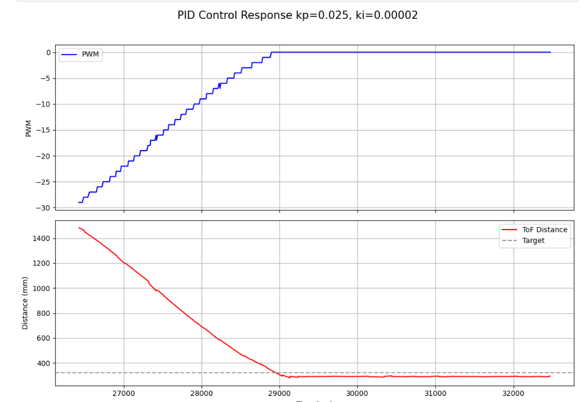
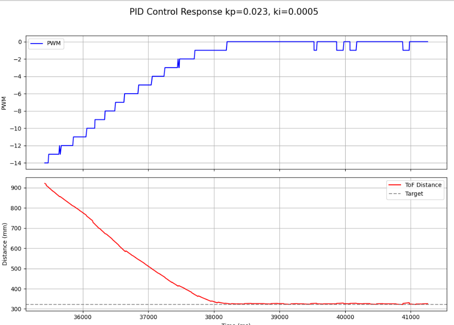
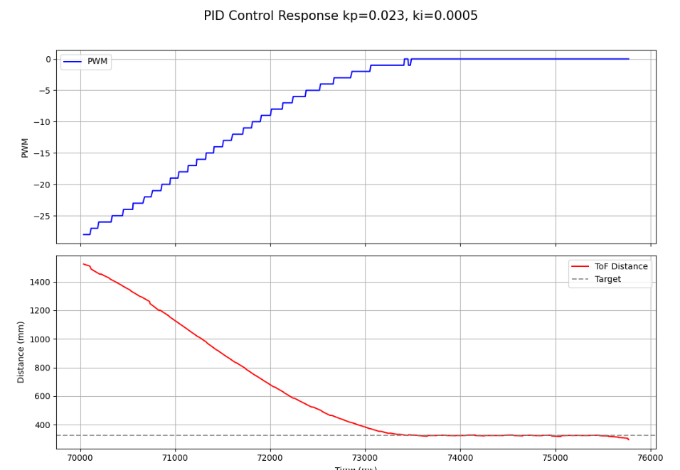
After implementing extrapolation, I ensured that everything was still working properly.
Later I switched to the lab to fine tune my variables which is where I did the majority of my experiments. Here in this video I have a very controlled approach to the set point. In the lab space I was also able to test different distances, ensuring the PI control still worked properly.
With these values I was able to essentially eliminate overshooting the setpoint, however my car took longer to arrive at this point.
The biggest challenge in this lab testing out different values for PI control. Since I needed to record data each time and plot it before I could compare my results, it was the most time consuming part of the lab. I also initially ran into problems with setting up extrapolation and how to retrieve the most recent distance values.
In this lab I successfully implemented PI position control for my robot using ToF sensor feedback. The robot was able to approach a wall and stop near the target setpoint, and I evaluated controller behavior using logged data over BLE. I also implemented linear extrapolation so that the control loop could continue updating even when no new sensor reading was available.